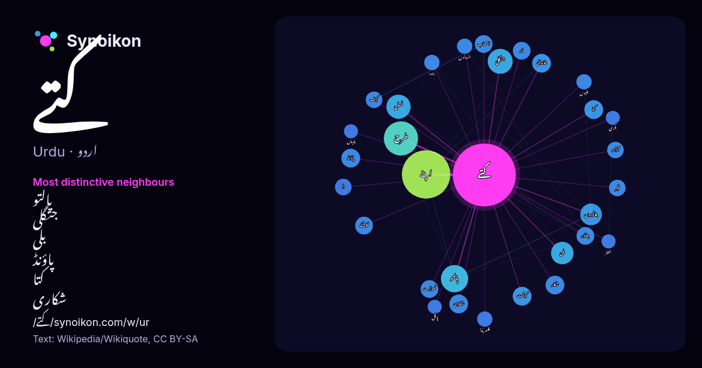

اردو · مقبول لفظ
کتے
“dogs” · ویکیپیڈیا, Wikiquote کے 615 استعمالات میں اس کے آس پاس ملنے والے الفاظ۔

سب سے نمایاں پڑوسی
- پالتو 19×
- جنگلی 15×
- بلی 13×
- پاؤنڈ 9.6×
- کتا 9.6×
- شکاری 9.5×
- نسل 9.5×
- جانوروں 9.2×
- کاٹنے 8.5×
- خاندانی 8.4×
- گوشت 8.1×
- کہف 7.9×
- آوارہ 7.8×
- گھوڑے 7.7×
- اصحاب 7.7×
- جانور 7.1×
- دا 7.1×
- بلیوں 6.9×
- فلوریڈا 6.5×
- بندر 6.5×
× = عام ویکیپیڈیا متن کے مقابلے میں کتنے گنا زیادہ۔
سب سے زیادہ آنے والے پڑوسی
- کو 143
- میں 126
- سے 114
- کا 106
- اس 83
- نے 65
- اپنے 60
- وہ 45
- ساتھ 40
- جو 34
- بھی 32
- تھا 31
- طرح 30
- ان 26
- کر 24
- کیا 24
- لیے 24
- اسے 21
- پالتو 19
- جس 19
سیاق میں
- بیرنگ سٹریٹ کے راستے نقل مکانی کتوں کے بغیر ممکن نہیں مانی جاتی۔ اس کے علاوہ کتے انسانوں کے لیے بے شمار خدمات سر انجام دیتے ہیں جن میں شکار، گلہ بانی، حفاظت، Wikipedia snippets · کتا
- جیمز کتے، پنسلوانیا (انگریزی: James City, Pennsylvania) ریاستہائے متحدہ امریکا کا ایک رہائشی علاقہ جو Elk County میں واقع ہے۔ جیمز کتے، پنسلوانیا کی مجموعی Wikipedia snippets · جیمز کتے، پنسلوانیا
- کھانوں کی پیش کش کرتے ہیں جن میں گوشت، دودھ، انڈے اور کتے کا کھانا شامل ہوتا ہے۔ اگر اس دن کوئی کتے کے ساتھ بے عزتی کرتا ہے تو یہ گناہ سمجھا جاتا ہے۔ کوکور Wikipedia snippets · کتے کا تہوار
- جیکب کتے، فلوریڈا (انگریزی: Jacob City, Florida) ریاستہائے متحدہ امریکا کا ایک شہر جو جیکسن کاؤنٹی میں واقع ہے۔ جیکب کتے، فلوریڈا کا رقبہ 8.3 مربع کلومیٹر Wikipedia snippets · جیکب کتے، فلوریڈا
- جکنٹو کتے، ٹیکساس (انگریزی: Jacinto City, Texas) ریاستہائے متحدہ امریکا کا ایک شہر جو Harris County میں واقع ہے۔ جکنٹو کتے، ٹیکساس کا رقبہ 4.8 مربع کلومیٹر Wikipedia snippets · جکنٹو کتے، ٹیکساس
- ہیں۔ کتے کی قبر کی کہانی ہے کیا؟ سندھ کے نامور ادیب مرزا قلیچ بیگ نے 1885 میں اس علاقے کا سفر کیا تھا۔ اپنے سفر نامے ’ڈھیاڑو جبل کے سیر‘ میں وہ کتے کی قبر Wikipedia snippets · کتے کی قبر
- جیسے کچھ کتے کی نسل کے جانور انسانوں کے جسم کو بری طرح سے نوچ ڈال سکتے ہیں۔ اس کی وجہ سے جسم کے حصے الگ بھی ہو سکتے ہیں اور ہلاکت بھی ممکن ہے۔ کتے کے کاٹنے Wikipedia snippets · کتے کا کاٹنا
- کتے کے گوشت سے مراد وہ لحم اور دیگر اجزاء جو کسی کتے سے مل سکتے ہیں۔ تاریخی اعتبار سے کتے کے گوشت کو بطور غذا دنیا کے کئی حصوں میں استعمال کیا گیا ہے۔ Wikipedia snippets · کتے کا گوشت
مزید الفاظ
2026-10-09 کو طے شدہ ترتیبات (±5 الفاظ، درمیانہ کارپس) کے ساتھ پہلے سے شمار کیا گیا۔ انٹرایکٹو نقشہ اسے لائیو ڈیٹا سے تازہ کر سکتا ہے۔
مشینی ترجمہ شدہ انٹرفیس؛ اصلاحات کا خیرمقدم ہے۔